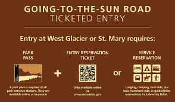

First thing you need is a park pass. Whether that be a day, week, annual or lifetime Pass.
The second, is the new entry ticket which is secured through a reservation.
For those of you who are night owls and early birds, this is your time to shine!
These new rules will only apply to "...Day-use visitors who arrive by private vehicle
or motorcycle and enter the West and St, Mary Entrances of the park between 6 am and 5 pm MST..."
So if you have your pass, you are able to enter without a reservation outside of busy hours.
Last year due to covid, so many traveled to participate in outdoor recreation; I was at the
top of logan pass at 6am once and the parking lot was half full. With new construction happening
this summer on the road, I am not surprised this was the solution they came up with.

Unfortunatly, they will be having to charge for reservations but the price is small. I hope that
people are able to get into GNP and aren't "out reserved" by folks with thick pocket books.